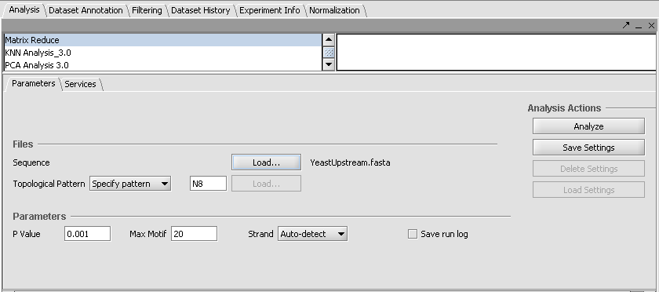
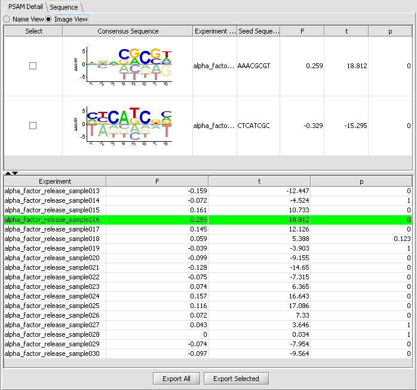

MatrixREDUCE is a tool for inferring cis-regulatory elements and transcriptional module activities from microarray data. It attempts to calculate a sequence-specific binding affinity for putative transcription factors. The sequence specificity of the transcription factors' DNA-binding domain is modeled using a position-specific affinity matrix (PSAM), representing the change in the binding affinity (Kd) whenever a specific position within a reference binding sequence is mutated. The resulting PSAM can be displayed as an affinity logo or in a simple tabular format.
For further details see STV webpage for MatrixREDUCE.
MatrixREDUCE operates on two input files: a microarray data set and a FASTA file containing the DNA sequences corresponding to the regulatory region of genes probed in the microarray set. The gene/probe identifiers used in the microarray dataset and the sequence identifiers used in the FASTA file must match. However, case is not important; the program will change the identifiers to lower case before attempting to match the records. If an identifier appears more than once in a file, the last instance is used.
(default values are shown in brackets [])
p_value - p-value threshold to stop looking for new motifs [0.001].
max_motif - Maximum # of motifs to search [20].
Topological Pattern - Specify Pattern, Load from file - length of seed pattern, e.g. N8 = length of eight [N8].
Strand - Auto-detect, Leading, Reverse, Both - specifies which strand to search on [Auto-detect].
Save Run Log - save the output from the MatrixReduce executable [not checked].
The PSAM detail tab displays the result PSAMs in a table format. Users can modify the display so that each PSAM is represented either by its sequence logo or its consensus sequence. The results can be printed, exported or captured as an image node in the project panel
The sequence tab displays the DNA sequences of the regulatory region associated with each gene that is probed. Users can visualize the matching scores of PSAMs against each sequence. Sequence score is the product of weights w across all positions in the sliding window.
When a PSAM is selected, its weighted score is displayed graphically on the input (upstream) sequences (Affinity score graph). The system computes for every position an aggregate affinity score for all selected PSAMs and plots the scores along all sequence positions. Each score is between 0 and 1. Only scores larger than the designated cut-off threshold are drawn.
In this example, we will use two files that are included in the data directory of the geWorkbench distribution iteself. They are Spellman1998AlphaTimeCourseMod and YeastUpstream.fasta. SpellmanReduced.txt contains data from Spellman (1998). YeastUpstream.fasta contains the corresponding upstream DNA sequences for these genes.
1. In the Project Folders component, either use an existing Project, or create a new one.
2. Right-click on Project and select "Open File(s)".
3. Browse to the file SpellmanReduced.txt and set the file type to "Tab-Delimted". This file is found in the data directory of the geWorkbench installation. Open the file.
4. You will be asked for an annotations file. This is not needed for this example, so you can hit Cancel.
5. Go to the Analysis tab and select Matrix Reduce.
6. To load the sequence file, click the "Load..." button. Browser to the sequence file "YeastUpstream.fasta" and open it.

7. Click Analyze to run MatrixREDUCE. (If you are running geWorkbench from a console window using ANT, you can follow the progress of the calculations there).
8. The result is placed as a node beneath the parent microarray dataset in the Project Folders component. At the same time, the results are displayed in the Visual Area of geWorkbench.
There are two tabs in the viewer, PSAM Detail and Sequence. Within PSAM Detail there are two options. The first is the Image view, which depicts the PSAM graphically.

The second viewing option is the Name view, which just shows the consensus sequence without the weighted components.

Finally, the Sequence tab depicts scores along each sequence.

MatrixReduce can also be run as a caGrid Service by choosing the Grid option on the services tab.
Foat BC et al., (2005). Profiling condition-specific, genome-wide regulation of mRNA stability in yeast. PNAS 102(49), 17675-17680.
Foat BC, Morozov AV, Bussemaker HJ. (2006). Statistical mechanical modeling of genome-wide transcription factor occupancy data by MatrixREDUCE. Bioinformatics 22(14):e141-e149.
Spellman et al., (1998). Comprehensive Identification of Cell Cycle-regulated Genes of the Yeast Saccharomyces cerevisiae by Microarray Hybridization. Molecular Biology of the Cell 9, 3273-3297.